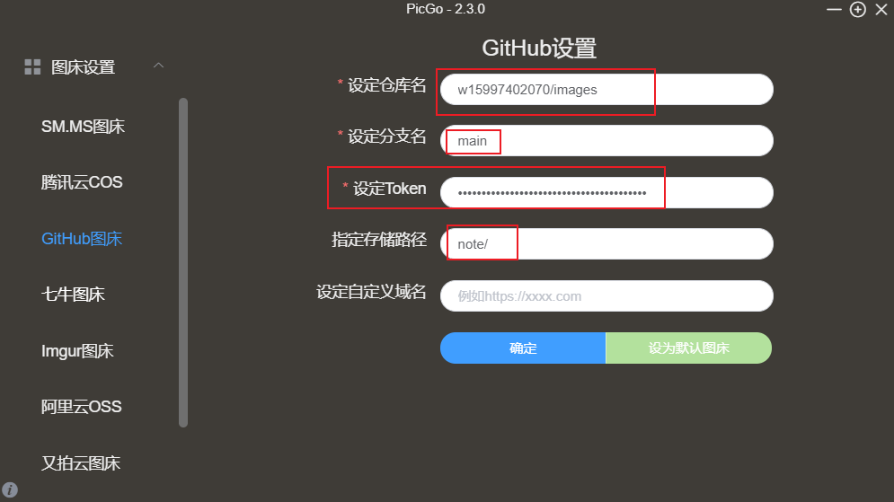

Hexo 安装文档
Hexo
安装
先安装git和node.js
安装 Hexo
npm install -g hexo-clinpm install hexo可以使用命令
npx hexo
初始化
创建文件夹 例如
D:\data\hexo进入
"D:\data\hexo"打开git bash here运行hexo init hexo启动
在初始化的文件夹安装
1
2
3
4安装服务
npm install hexo-server --save
启动 会自动监控文件更新
hexo server运行
hexo server然后浏览器输入127.0.0.1:4000就可以看到页面了1
2
3
4
5指定端口启动
hexo server -p 5000
静态模式启动不会监控文件变化
hexo server -s发布
生成静态文件
1
2
3hexo generate
生成静态文件并监控文件变动
hexo generate --watch部署
您可执行下列的其中一个命令，让 Hexo 在生成完毕后自动部署网站，两个命令的作用是相同的。
1
2hexo generate --deploy
hexo deploy --generate上面发布和部署可以简化成一个命令
1
2
3hexo g -d
或者
hexo d -g
插入图片
统一位置存放文件
在source目录下建一个images文件夹,将图片放到images文件夹中
比如放一个 图标 avatar.png 到images中就可以在配置文件中使用
1 | avatar: |
相对路径
图片除了可以放在统一的images文件夹中，还可以放在文章自己的目录中。文章的目录可以通过配置_config.yml来生成。
1 | # _config.yml |
将_config.yml文件中的配置项post_asset_folder设为true后，执行命令$ hexo new post_name，在source/_posts中会生成文章post_name.md和同名文件夹post_name。将图片资源放在post_name中，文章就可以使用相对路径引用图片资源了。
1 | # _posts/post_name/image.jpg |
上述是markdown的引用方式，图片只能在文章中显示，但无法在首页中正常显示。
如果希望图片在文章和首页中同时显示，可以使用标签插件语法。
1 | #_posts/post_name/image.jpg |
直接引用网络图片
可以使用typro自动上传文件功能
文件 -> 偏好设置 -> 图像
插入图片下拉选项中选择上传图片
上传服务中选择PicGO

PicGo中的设置,以上传到GitHub为例

设置仓库,在github 中创建一个仓库
设定分支直接以main分支也可以
设定token,在GitHub中生成token
github中
Settings -> Developer settings -> Personal access tokens点击Generate new token然后把token复制到这里就可以了设置存储路径,可以不设置,默认就在仓库主目录中,如果要设定目录一定要以
/结尾,不然上传失败